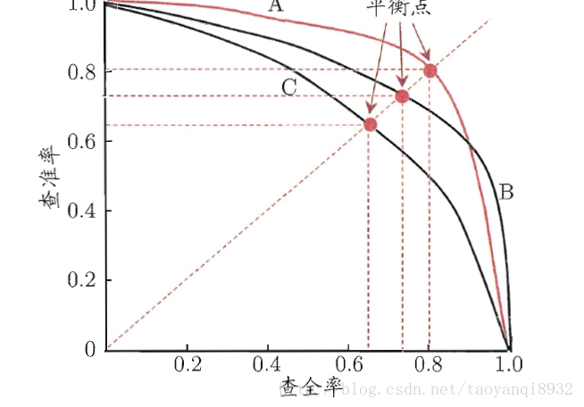
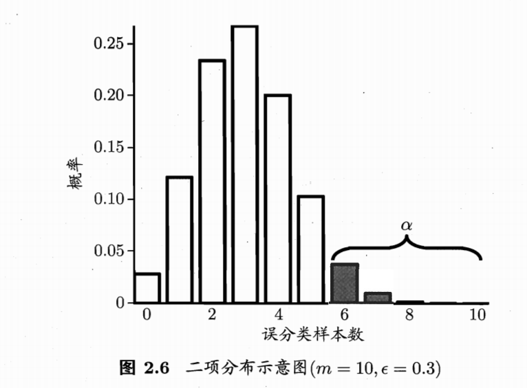

查准率、查全率
定义
首先是那个蛋痛的表：
| 真实\预测 | 真 | 假 |
|---|---|---|
| 真 | TP | FN |
| 假 | FP | TN |
查准率：你猜它是真的，到底有几个是真的，你猜测的准确率是多少
查全率：这堆东西都是真的，你猜到了几个是真的
两者十分矛盾，往往一个高时，另一个就低。
- 假如你想提高查全率，你可以猜测我硬盘里全部avi文件都是av。那么你肯定猜到了我所有的av。但查准率十分低，因为你猜了我全部是av，但其实99.9%都是动物世界。因此你查全率有100%，而查准率只有0.1%。
- 假如你想提高查准率，你可以只把你看过的是av的avi文件标为av，这样查准率有100%，因为你猜的全部都对。但由于硬盘里片子其实挺多的，所以其实有很多的av，你只猜对了一部，所以查全率极低。
所以，我们需要平衡查准率和查全率
PR(precision and recall)图

1. BEP度量
直接取查准率和查全率相等的点，比较简单。例如学习器C的BEP是0.64
2. F1度量
简单的F1度量就是将查准率和查全率做调和平均，因为做调和平均时，如果其中一项很低，则结果就会很低
有时，我们对查准率和查全率的权重有要求，有时其中一者权重比较高
ROC表
很多时候，一个样本值域在[0.0-1.0]之间，我们可以设样本值小于t的为正例，而大于t的为反例。当t越小，正例的样本数量越少，反例的样本数量越多；反之亦可。
如何定义t，让正例反例的分类更加科学，这就是一门学问了。这里有人提出了使用ROC曲线来研究学习器的泛化性能。
ROC(Recevier Operating Characteristic)全称“受试者工作特征”。横纵坐标轴分别表示真正例率(TPR)和假正例率(FPR)。
判断的依据即ROC曲线的面积
假设检验
泛化错误率表示某宏观事件犯错的概率是。所以，若样本总数量为。那么出现错误数量为的概率：
则可认为置信度在(1-)时，测试错误率不大于

看图举例最清楚了，其实将上面一句话翻译一下就是：误分类样本数量在6以下，也就是测试样本误分类的概率在以下，的概率是(1-)。